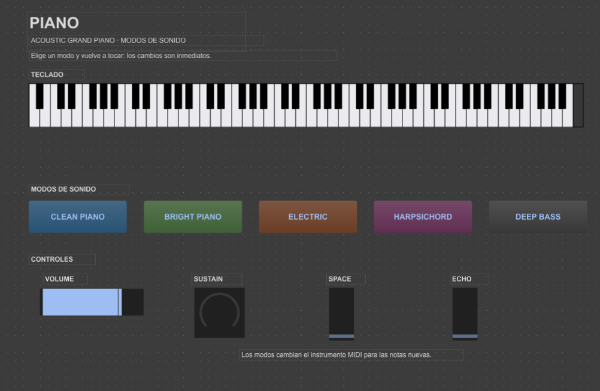
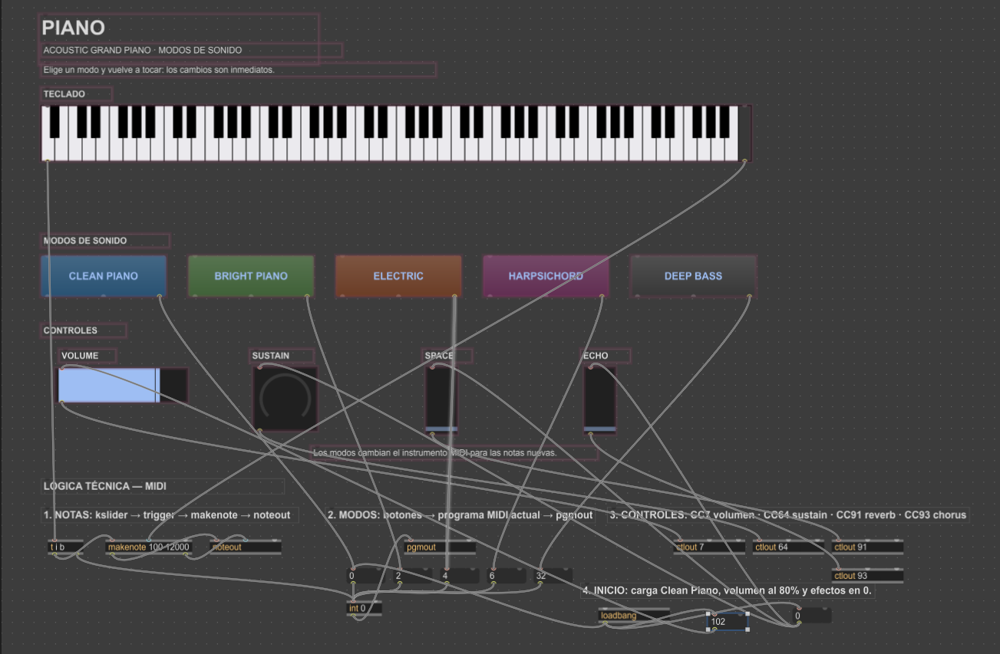

Entrega N° 3: Síntesis y Control Sonoro en Max/MSP
1. Demostración de la Interfaz en Vivo
2. Ficha Técnica y Guía de Controles
Esta aplicación desarrollada en Max/MSP combina módulos de síntesis de audio, procesamiento en tiempo real e interacción MIDI mediante controles visuales:
Bangs (Disparadores): Envían impulsos instantáneos para activar eventos sonoros, notas solas o reinicios de parámetros.
Sliders / Faders (Deslizadores): Ofrecen modulación continua sobre envolventes ADSR, frecuencias de corte de filtros y volúmenes principales.
Toggles (Conmutadores): Encienden o apagan módulos de síntesis, efectos en cadena (reverb, delay) o activadores de bucles.
3. Registro Visual (Modo Presentación vs. Modo Edición)
Modo Presentación (Interfaz de Usuario)
Vista limpia diseñada exclusivamente para la interpretación e interacción del usuario.

Modo Edición (Programación Visual y Conexiones)
Estructura modular interna del parche mostrando el flujo de señal digital de audio (MSP) y control (Max).

4. Archivos de Proyecto
El archivo editable .maxpat y las muestras de audio asociadas se encuentran disponibles para su descarga o inspección en la raíz del repositorio de GitHub.